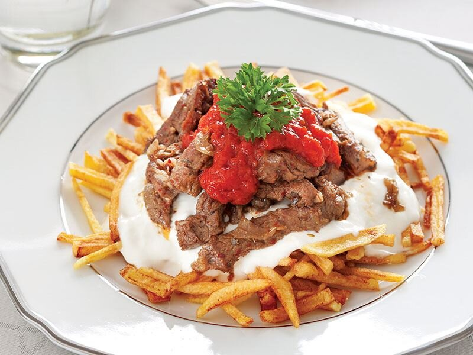
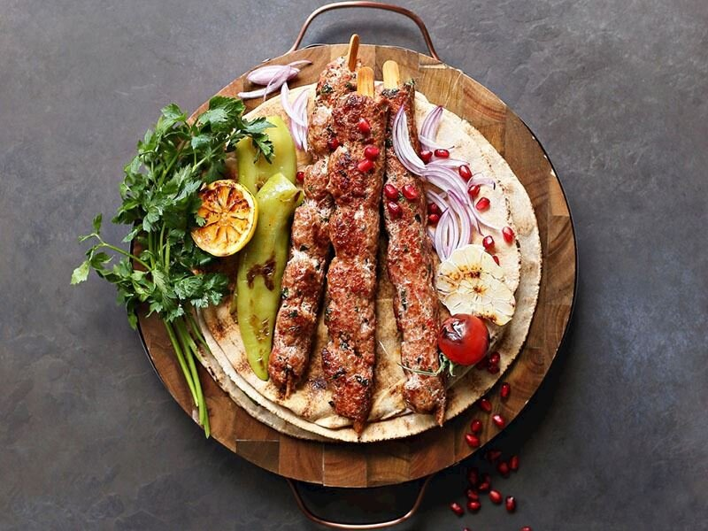

Turkish cuisine is one of the most delicious cuisines in the world. Below you can find some foods from Turkish cuisine.
-
1.Çökertme Kebabı
Türk mutfağına özgü bir lezzet olan çökertme kebabı, Bodrum ile özdeşleşmiştir. Protein bakımından zengin olan bu besin, patatesle birlikte servis edilir. Diğer adı 'çentik kebabı' olan bu yemek, hemen hemen her yörede tüketilir. Dilerseniz en sevilen tariflerden biri olan etli çökertme kebabı nasıl yapılır birlikte görelim.
Recipe of Çökertme kebabı
Patateslerin kabuklarını soyup kibrit çöpü kalınlığında doğrayın ve tuzlu suda 30 dakika bekletin. Suyunu döküp patatesleri iyice kurulayın ve kızgın yağda kızartın. Kağıt havlu üzerine alın. Soğanı piyazlık doğrayıp zeytinyağında pembeleşinceye kadar kavurun. Etleri şerit halinde kesin ve soğanlara ekleyin. Kısık ateşte kapağı kapalı olarak etler yumuşayıncaya kadar pişirin. Tuz, karabiber, kimyon, kekik ve pul biber ekleyin. Sos için, domatesleri rendeleyip zeytinyağında kavurun. Domates püresini ekleyip kısık ateşte 10 dakika pişirin. Tuz ve karabiber ile tatlandırın. Servis tabağına patatesleri yayın. Üzerine etleri yerleştirip sarımsaklı yoğurt gezdirin. Sos ekleyin ve maydanoz ile süsleyin. Çökertme kebabının yanına ne yapılır diyenlerdenseniz, yemeğinizi kıl biber turşusu ile birlikte servis edebilirsiniz. Şimdiden afiyet olsun.
-
2.Adana Kebabı
Ülkemizde kebap denildiğinde ilk akla gelen yemeklerden biri olan Adana kebap, ocakbaşının da en çok aranan tarifidir. Adana kebabı, zırh adı verilen ve satıra benzeyen bir bıçak ile kıyılan et ile hazırlanan bir kebap çeşididir. Adana kebabını diğer kebaplardan ayıran en önemli özellik, yapımında kullanılan ettir. Kebap yapımında kullanılan et, doğal ortamda ve yaylalarda yetiştirilmiş erkek koyunlardan elde edilmiş olmalıdır. Üretim tekniği ve ustalık becerileri de bu kebaba lezzet veren diğer unsurlardandır. Adana kebap yapımında, kesinlikle dana eti kullanılmamalıdır. Ana malzemeleri kuzu eti, kuyruk yağı ve pul biberdir. Meşhur Adana kebabı, Türk Patent ve Marka Kurumu tarafından tescillenerek coğrafi işaret almıştır. Malzemeler hazırsa, ev yapımı gerçek adana kebap tarifi için detaylara geçebiliriz.
Recipe of Adana kebabı
Dinlendirilmiş kuzu etine tuz ilave edilerek zırhta çekilir. Yine Zırhta çekilmiş kapya biber ve kırmızı toz biberi eklenerek yoğurulur. Hazır olan kıyma karışımından avuç içini dolduracak kadar parçalar alıp şişe tutturulur. Ele yapışmaması için ara sıra avuç ıslatılır, şişteki kıymanın her yeri aynı kalınlıkta olmalıdır. Dış rengi koyuya dönene kadar ama kurutmadan pişirilir. Közlenmiş domates ve közlenmiş köy biberi ile servis edilir.
-
3.İskender

İskender, 19. yüzyılda lokanta işleten bir gencin eti farklı bir şekilde pişirmesiyle ortaya çıkan bir yemektir. Gencin adını verdikleri bu yemek, Bursa'nın yöresel lezzeti haline gelmiştir. Ana vatanı Türkiye olan iskender, Avrupa ülkelerinde de yaygın bir şekilde tüketilir. Besin değerleri bakımından zengin olan iskender kebap, kas ve kemik gelişimini desteklediği için sporcu listelerinde de kendine yer bulur. İskender yapımında servis tabağına ilk olarak pide konulur. Pidelerin sosla ıslatıldıktan sonra, üstüne ince dönerler eklenir ve tereyağı sosu ile lezzetlendirilir.
Recipe of İskender
Dana bonfile etini streç filme sarıp dondurucuya alın. Yaklaşık 1-1,5 saat buzlukta bekletin. Bıçakla ince dilimler kesebileceğiniz sertliğe geldiğinde eti buzluktan çıkarın. Keskin bir bıçak yardımıyla ince yaprak şeklinde dilimler kesin. Yapışmaz yüzeyli bir tencereye etleri alın ve suyunu salıp tekrar çekene kadar karıştırmadan kapağı kapalı olarak pişirin. Zeytinyağı ve tereyağını da tencereye ilave edip kızartın. Tuz ve karabiber ile tatlandırıp ocaktan alın. Sosu için zeytinyağı ve tereyağını bir sos tenceresine alıp ısıtın. Domates püresi ve sıcak suyu ekleyip kaynamaya bırakın. Kaynamaya başladığında tuzunu ilave edip karıştırın ve ocaktan alın. Yapışmaz yüzeyli bir tavada tereyağını eritin. Pideleri küp küp doğrayıp tavaya ekleyin ve hafif pembeleşene kadar kızartın. Ayçiçek yağını bir tavada ısıtın. Biberleri ve dörde böldüğünüz domatesleri yağda kızartıp hazırlayın. Servis tabağına önce hafif kızarttığınız pideleri yayın. Üzerine domates sosu gezdirin ve kızarttığınız etleri yerleştirin. Tereyağını eritip etlerin üzerine gezdirin. Yanında yoğurt, kızarttığınız domates ve biberleri yerleştirin.
-
4.Ali Nazik Kebabı

Evde kebap yapmayı sevenlerden misiniz? O zaman buyurun tarifime. Bu tarifimde sizlere Ali nazik kebabı nasıl yapılır? Ne ile yapılır? onlardan bahsedeceğim. Çoğu insanın damak zevkine hitap edeceğini düşündüğüm Ali nazik kebabını, istediğiniz zaman yapabilirsiniz. Misafirlerinize, davet sofralarınıza pratik bir şekilde hazırlayacağınız Ali nazik kebabını yemekten büyük keyif alacaksınız. Ana yemek tariflerinize bir yenisini ekleyeceğiniz kebabımızın tadı damağınızda kalacak. Tarifimi denemeyi ve defterinize eklemeyi unutmayın. Deneyeceklere şimdiden afiyet olsun. :)
Recipe of Ali Nazik kebabı
Patlıcanları közleyip, kabuklarını temizleyin. İnce ince doğrayın. Soğuduktan sonra, ezilmiş sarımsak ve süzme yoğurtla beraber iyice karıştırın. Tuzunu ayarlayın. Diğer taraftan etleri yıkayıp, suyunu süzdürün. Pişirme kabına alarak kısık ateşte, tencerenin kapağı kapalı bir şekilde etlerin bırakmış olduğu suyu çekmesini bekleyin. Daha sonra tereyağını ilave edin. Tuz hariç, baharatları ve domates sosunu ilave edin. Mutlaka sıcak su ekleyin. Çok sulu olmayacak, sadece koyu kıvamlı bir sosumuz olacak. Etlerin pişme süresi uzarsa, sık sık kontrol edip gerekirse tencerenin dibi tutmaması için az az sıcak su ilave edebilirsiniz. Pişen etlere, son olarak tuzu ilave edin ve ocaktan alın. Servis tabağına önce patlıcanlı harç, üzerine ise etleri koyun. İsteğe göre süsleyerek, servis edebilirsiniz.